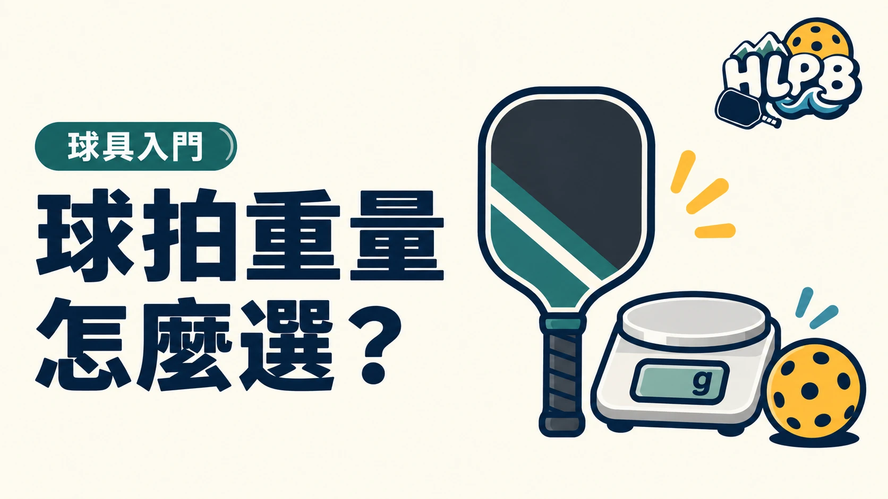

球拍規格常以 oz 標示重量，1 oz 約 28.35 克。先把單位統一，再看拿起來的感受。
| 標示 | 換算約值 |
|---|---|
| 7.5 oz | 213 克 |
| 8.0 oz | 227 克 |
| 8.5 oz | 241 克 |
這是單位換算，不是全品牌統一的輕、中、重分級。產品若提供重量範圍，購買前也可詢問實際那支拍的重量。
靜態重量和揮拍感受要分開
球拍放在秤上得到的是重量。拿在手上動起來的感受，還與重量分布、拍型和握柄等因素有關。因此，兩支同重量的拍，未必同樣順手。
不要把「比較輕」直接當成「一定適合新手」。 先實際握拍與連續揮拍，再檢查基本回球是否容易掌握。
| 自己遇到的問題 | 比較時先看 |
|---|---|
| 揮拍感覺吃力 | 實際重量、分布與握持方式 |
| 拿得輕鬆，打球卻難掌握 | 連同回彈、厚度與自己的動作一起看 |
| 想加配重 | 先確認需求、原廠及賽事器材限制 |
這張表是選拍檢查順序，不是依症狀診斷動作。不要只因手感不習慣，就立刻把拍子加重。
產品寫重量範圍，怎麼選實際那一支？
同型號若以範圍標示重量，先詢問販售者能否提供現貨實測值，並確認量測是否包含外層握把布、護邊或其他配件。比較兩支拍時，最好都以相同狀態記錄；一支裸拍與一支已加配件的成品，數字沒有直接對照的意義。
輕拍和重拍，先比較自己的操作負擔
不要只在店裡拿著停留幾秒。HLPB 建議把連續準備、正反拍切換、底線回球與網前輕擋一起納入試打。自己是否容易掌握，是選擇的起點；對另一位球友剛好的重量，不代表自己的動作與練習量也能適應。
| 試拍時記錄 | 用來回答的問題 |
|---|---|
| 連續回拍是否順暢 | 球拍是否影響下一球的準備 |
| 短動作是否能掌握出球 | 不是只靠大力抽球判斷手感 |
| 握持是否需要一直用力 | 握把與握法是否也需要一起檢查 |
| 同重量不同型號的差異 | 是否需要進一步比較揮重與重量分布 |
為什麼不直接推薦一個新手重量？
身體條件、既有球類經驗、球拍結構與握持習慣都不同，單靠新手或進階標籤，不能決定適合的公克數。先用規格篩選能操作的候選，再用相同條件試打。若原本的拍已能穩定使用，換拍時也可保留它作比較基準，不必把更輕或更重當成升級方向。
來源：Selkirk 重量指南 官方資料 ↗；單位換算與比較順序為 HLPB 整理。資料核對：2026/10/19。
重量一樣，為什麼揮起來不同？
靜態重量只描述總重量。揮重描述揮動時的慣性，扭重則關於偏心擊球時的抗扭穩定。購買前也要確認標示是否包含握把布與配重，並比較測量方式相同的資料。
最後查證：2026-10-19｜資料來源：HLPB 編輯整理與正文所列官方資料
返回文章列表